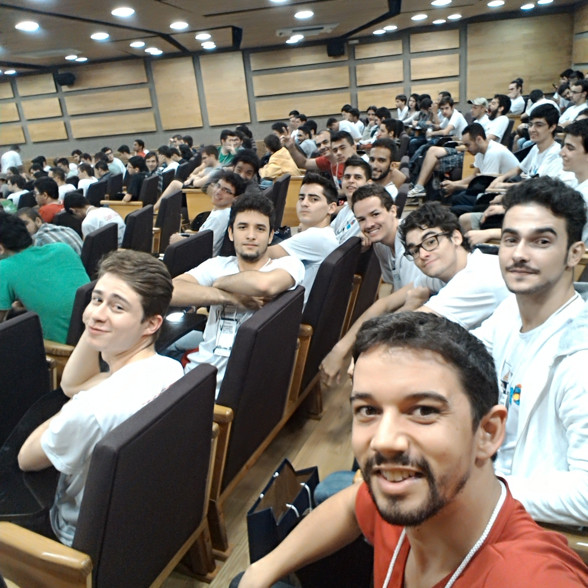
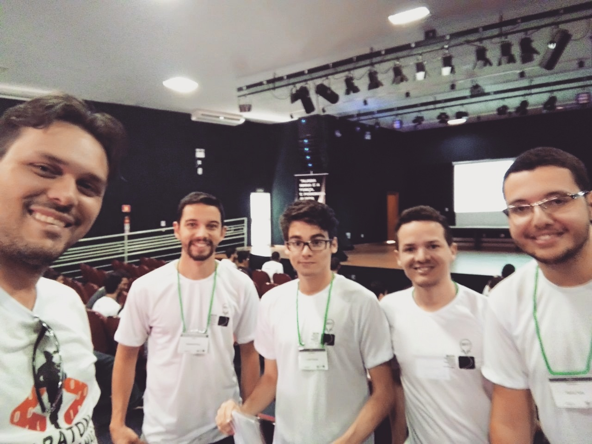
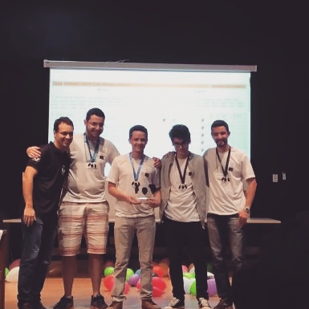
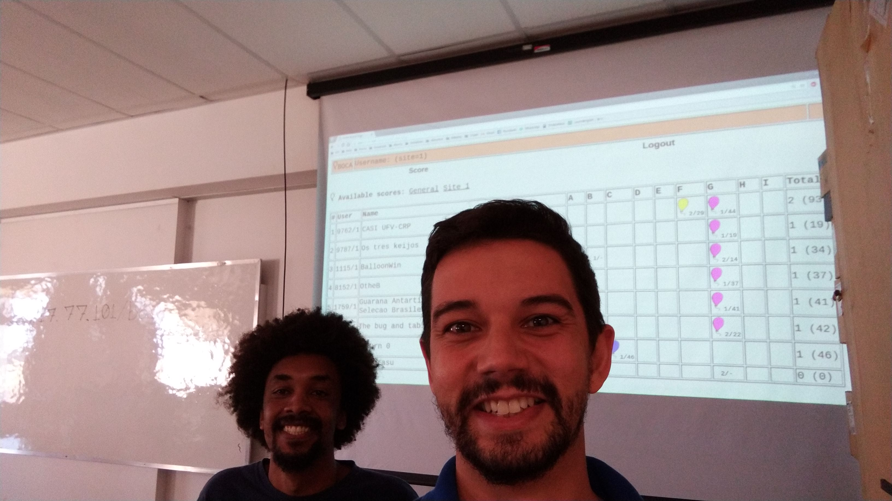
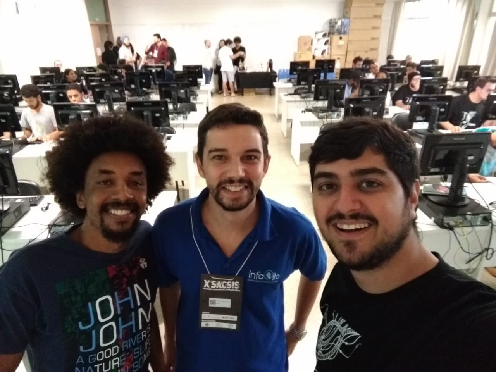
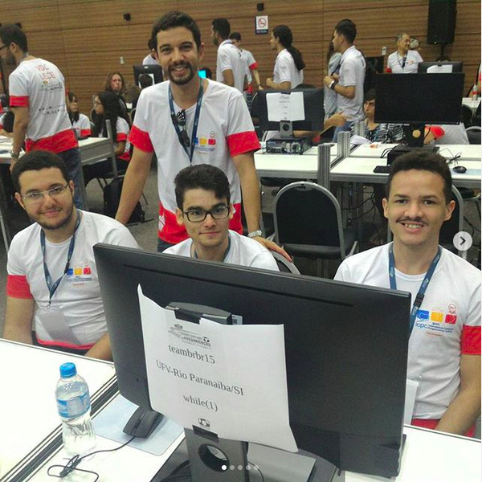
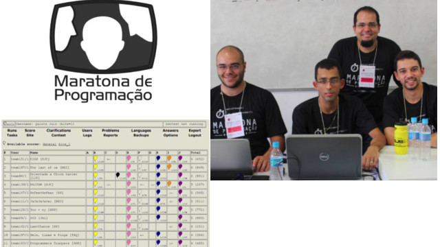
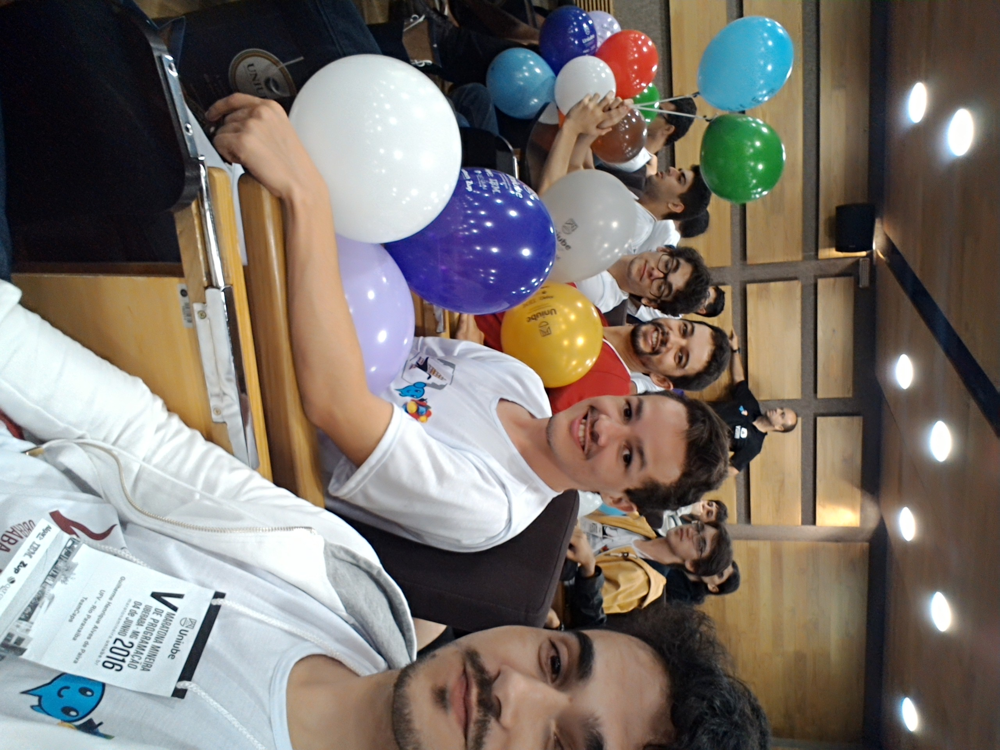
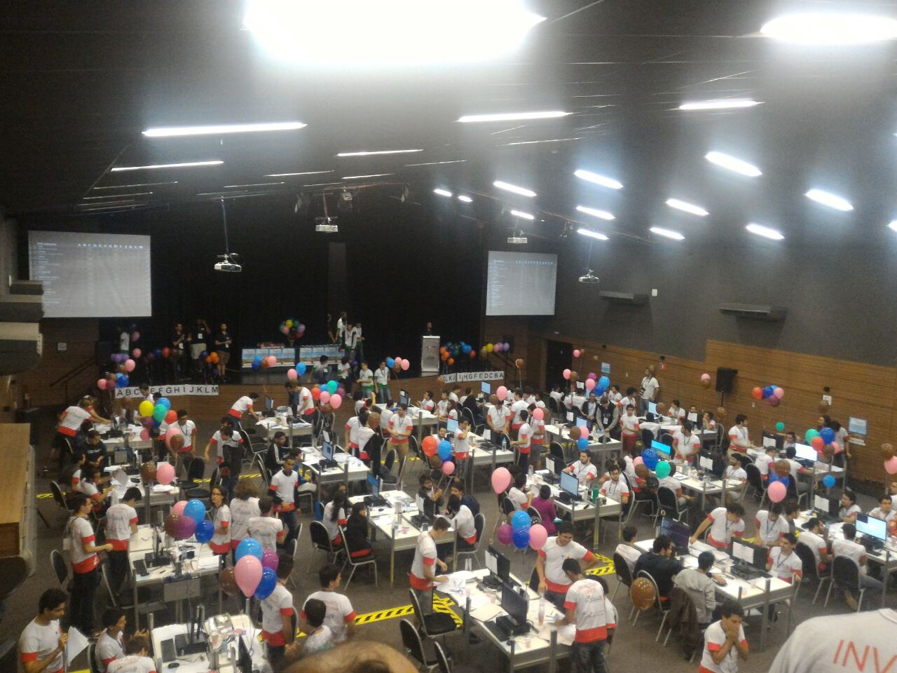

A Maratona de Programação é uma competição que reúne equipes para resolver problemas computacionais utilizando raciocínio lógico, criatividade, conhecimentos de programação e trabalho em equipe.
No Brasil, a Maratona de Programação é tradicionalmente promovida pela Sociedade Brasileira de Computação (SBC) desde 1996. A competição faz parte da tradição internacional de competições de programação, que têm entre suas principais referências as disputas promovidas pela Association for Computing Machinery (ACM).
A Maratona de Programação do WSIS será realizada em dois dias, combinando preparação e competição.
No dia 05 de outubro, será realizado o aquecimento. Essa atividade tem como objetivo apresentar o funcionamento da competição, permitir que os participantes conheçam o ambiente de disputa, testem suas estratégias e se preparem para os desafios do dia seguinte.
O aquecimento não é obrigatório, mas é altamente recomendado para participantes que nunca participaram de uma competição de programação. Durante essa atividade serão apresentadas as informações específicas sobre o funcionamento da competição e os procedimentos que deverão ser seguidos durante a prova.
No dia 06 de outubro, acontecerá a competição. As equipes deverão resolver uma série de problemas computacionais durante um período limitado, buscando obter o maior número possível de soluções corretas.
Os problemas poderão ser resolvidos utilizando as linguagens de programação C, C++, Java ou Python.
Pode participar qualquer pessoa que esteja inscrita no evento WSIS. Não é necessário possuir conhecimento prévio em programação competitiva, e a participação de iniciantes é fortemente incentivada.
As equipes devem ser formadas previamente pelos próprios participantes e devem ser compostas por 3 integrantes.
Não há limite para o número de equipes participantes. A participação na Maratona está condicionada à inscrição no evento WSIS e não há cobrança adicional para participar da competição.
Durante o tempo determinado para a competição, cada equipe deverá buscar resolver o maior número possível de problemas. A classificação considera a quantidade de problemas resolvidos e, em caso de empate, os critérios de tempo e penalidades definidos pela competição.
A participação na Maratona de Programação contribui para o desenvolvimento de diversas habilidades, entre elas:
Além disso, serão emitidos certificados para as equipes classificadas em 1º, 2º e 3º lugares.
A Maratona de programação do WSIS 2026 será realizada sob a coordenação dos professores:
Confira alguns registros das edições anteriores da Maratona de Programação:








